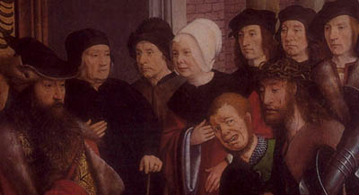

Dagelijks geloof
Vrouwen en religie in de laatmiddeleeuwse stad
|
 |
In de strijd om de Academische Jaarprijs dingen teams van 13 universiteiten mee naar € 100.000, met voorstellen om recent onderzoek breed toegankelijk te maken. De Leidse inzending is een project van historici en letterkundigen rond recent onderzoek naar laatmiddeleeuwse kluizenaressen in de Nederlanden (http://www.academischejaarprijs.leidenuniv.nl/). Het team laat zien hoe middeleeuwse vrouwen zich in de late Middeleeuwen manifesteerden binnen informele circuits in de stad en hoe kluizenaressen, begijnen en wijze vrouwen het geloofsleven van alle dag bepaalden. Deze kleine tentoonstelling aan de hand van teksten in handschriften en vroege drukjes uit de Universiteitsbibliotheek toont enkele sporen van die cultuur in de laatmiddeleeuwse literatuur. Er zijn drie afdelingen: vrouwen in de stad, kluizenaressen en begijnen, met speciale aandacht voor de begijnen uit Mechelen, vanwege een nieuwe aankoop van de Universiteitsbibliotheek.
Geert Warnar
| 1. | Vrouwen in de stad | |
| 2. | Kluizenaressen | |
| 3. | Begijnen |
| volgende pagina | |